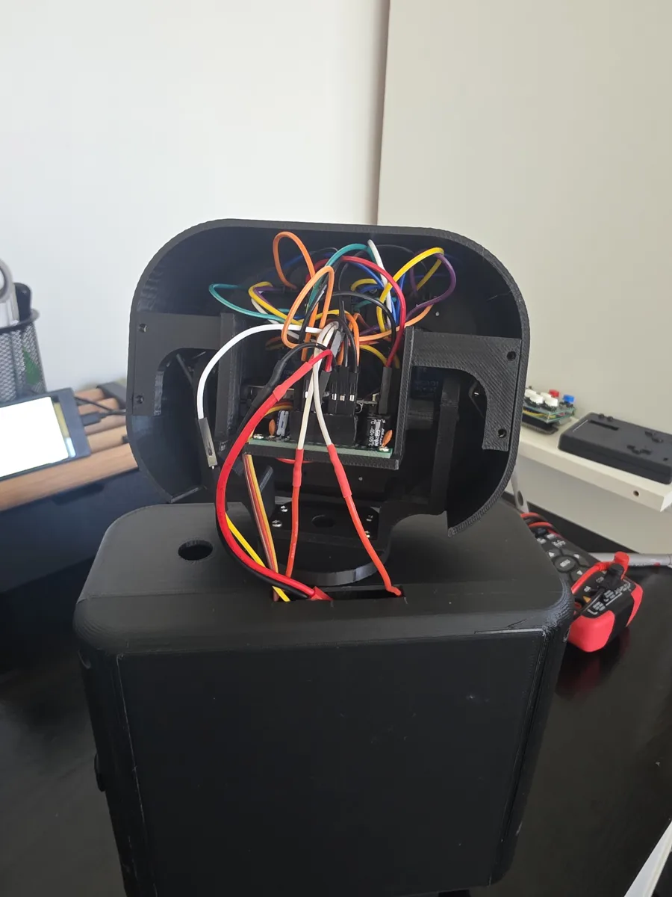
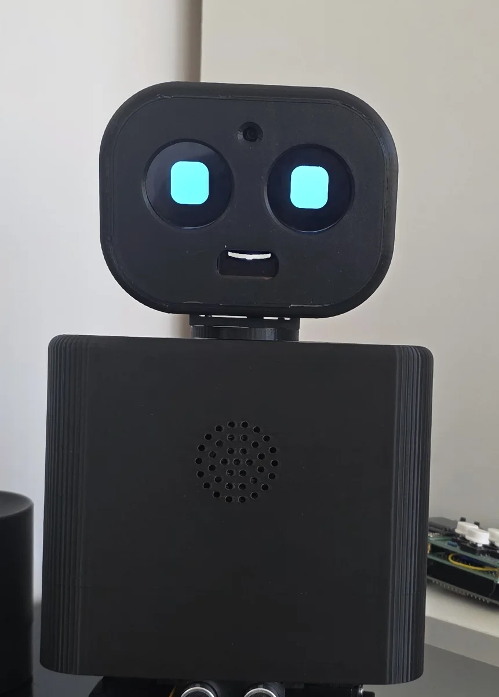

Project Overview
Goal. A small, friendly two-legged robot that can walk, see, listen and talk, built from my own design rather than a kit.
Approach. A Fusion 360 printed body with 10 leg servos, an ESP32-S3 running the kinematics, gait and IMU balance, separate boards for the face and the camera/microphones, and a MuJoCo digital twin that runs the same gait code so new settings are tried in simulation before they risk the hardware.
Result so far. Bip stands, walks short distances on the table, talks and reacts with its face. Reliable walking is the current focus.
Mechanical & Electronics
Every structural part is designed in Fusion 360 and 3D printed. Each leg has five joints: hip yaw, hip, knee, ankle pitch and ankle roll, all on MG996R servos driven by a PCA9685. Hip yaw is limited in firmware (10° toes-in, 30° toes-out) so the feet can't hit each other when they turn.

Key Engineering Decisions
x is an instant emergency stop, and the 2S LiPo voltage is monitored with low-battery warnings (filtered, because servo current briefly pulls the voltage down).Walking & the Digital Twin
Testing & Results
How I measure it. I built a small gait camera: ArUco markers on the feet and torso, tracked by a webcam with Python and OpenCV, plus the robot's own IMU log. Each trial records speed, sway and heading, and each clip is saved with its result.
What the tests show. The firmware does exactly what the simulator does, so the gap is in the model, not the code. On the table the hand-tuned gait walks but drifts, the feet slide, and most falls happen when the stride changes at the start or stop. The gait learned in simulation fell every time, which showed the twin is wrong in pitch. The next step is to measure the real servo lag and weight distribution and feed them back into the model.
Face & Senses
An ESP32-C3 draws the face: two GC9A01 round displays for the eyes and an SSD1306 OLED for the mouth, all procedurally animated. A XIAO ESP32-S3 Sense provides the camera and microphones, a MAX98357A amp drives the speaker, and an HC-SR04 sonar sits under the torso. Voice and conversation are handled on the laptop (see Key Engineering Decisions).
What it does with them. Bip recognises my face, and its eyes follow the nearest face. It reacts straight away to hand gestures (wave, thumbs up, open palm for stop) and to everyday sounds such as a knock or a clap. It knows what objects are in front of it and, with the sonar, how far away they are, and it can answer "what do you see?" from a camera photo.
